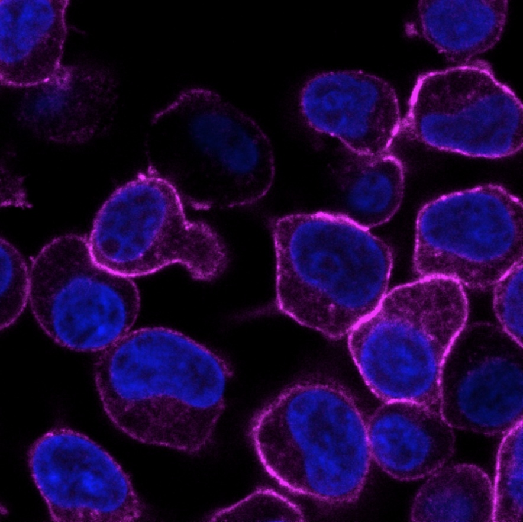

Projects
A selection of projects where I've applied data engineering skills -
from building pipelines and working with cloud data platforms to hands-on
experimentation with tools like Snowflake and Databricks. Each one reflects
a step in my ongoing journey from biochemistry into data, turning raw,
messy datasets into something structured and useful.
Internal Project
As part of a cross-functional team, I contributed to the development of an internal enterprise knowledge retrieval platform built on Snowflake using data ingested from Salesforce. The platform transforms CRM data into a trusted, searchable knowledge base, enabling business users to access historical project and industry information through AI-powered assistants. My role involved supporting the design and implementation of the data layer that powers the retrieval system, ensuring data was structured and prepared for reliable downstream consumption.
I supported the evaluation of architectural approaches for AI-driven data retrieval, including assessing the trade-offs between Snowflake and ThoughtSpot for serving structured data to AI agents. I also developed and validated SQL queries to provide accurate industry insights and benchmarking information, ensuring AI-generated responses were grounded in governed and reliable data. This project strengthened my experience in data warehousing, SQL development, data governance, and designing scalable data solutions to support enterprise AI applications, while all business-specific details have been generalized for confidentiality.
Innovator Project
As part of my data engineering training, I developed an ETL pipeline for a food delivery analytics platform using Databricks and a medallion architecture approach. I built multiple automated jobs to ingest, transform, and prepare operational data through the Bronze, Silver, and Gold layers, applying data cleaning, validation, and aggregation techniques to create reliable datasets for downstream analytics and BI dashboard consumption.
Alongside my technical development responsibilities, I collaborated within a Scrum team to deliver data products aligned with stakeholder requirements. I also acted as Scrum Master for one sprint, facilitating Agile ceremonies, supporting team coordination, and helping track progress against project objectives. This project strengthened my experience in Databricks, ETL development, medallion architecture, data transformation, data quality, BI enablement, and delivering scalable data solutions within an Agile environment.
Investigating the role of CD46 isoforms in T lymphocytes

As an undergraduate researcher in Dr. Robert Köchl's lab, I investigated how a protein called CD46 shapes the behaviour of CD4+ T cells — key players in the body's immune response. CD46 comes in two isoform variants, CYT-1 and CYT-2, and while prior research had linked CYT-1 to T cell metabolism and function, CYT-2's role was far less understood. Using wild-type, CD46 knockout, and isoform-specific Jurkat T cell lines that I helped develop and characterise, I examined how each isoform influenced T cell adhesion, immune synapse formation, and cell shape — all of which depend on the actin cytoskeleton. My results showed that CYT-2 engages a distinct signalling pathway (via WNK1) that drives fast initial adhesion but limits how long that adhesion is sustained, revealing a previously unrecognised, dual role for this isoform. This project sharpened my experimental design, data analysis, and scientific communication skills — and it's part of what pulled me toward a career built around working with complex data.